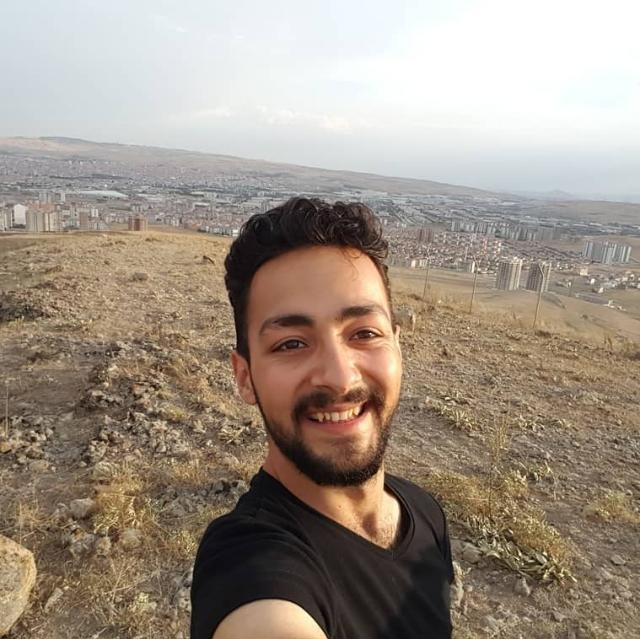

About
I am studying Visual Communication Design at Kütahya Dumlupınar University. I speak fluent English.I learned teamwork in the activities in my education life and improved myself in human relationships and communication skills. I think that my long-term thinking and empathy skills, especially in problem solving, crisis management and social relations, will help me in my career life. I aim to add value to the company in the short term according to my skills and knowledge. In the long run, I want to improve my experience and learn new things. If you are interested, I would like to communicate face to face.